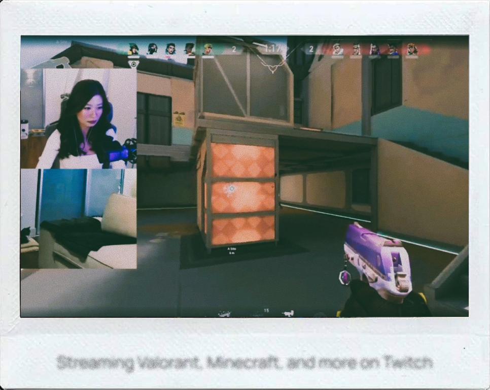
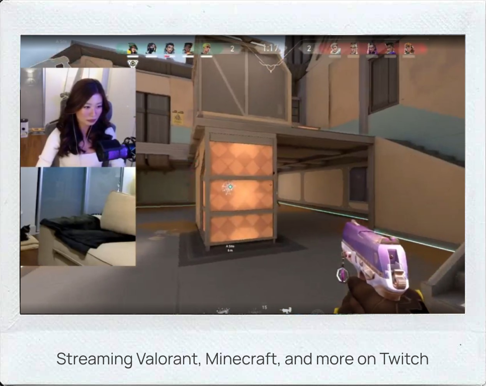
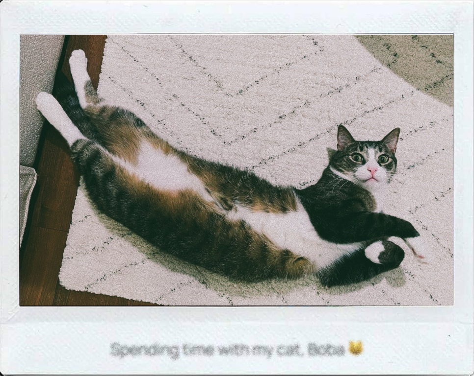
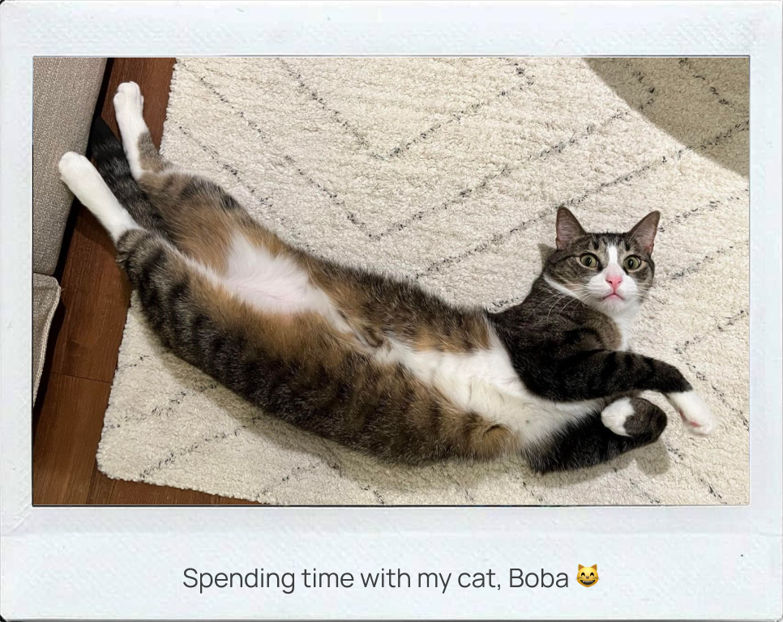
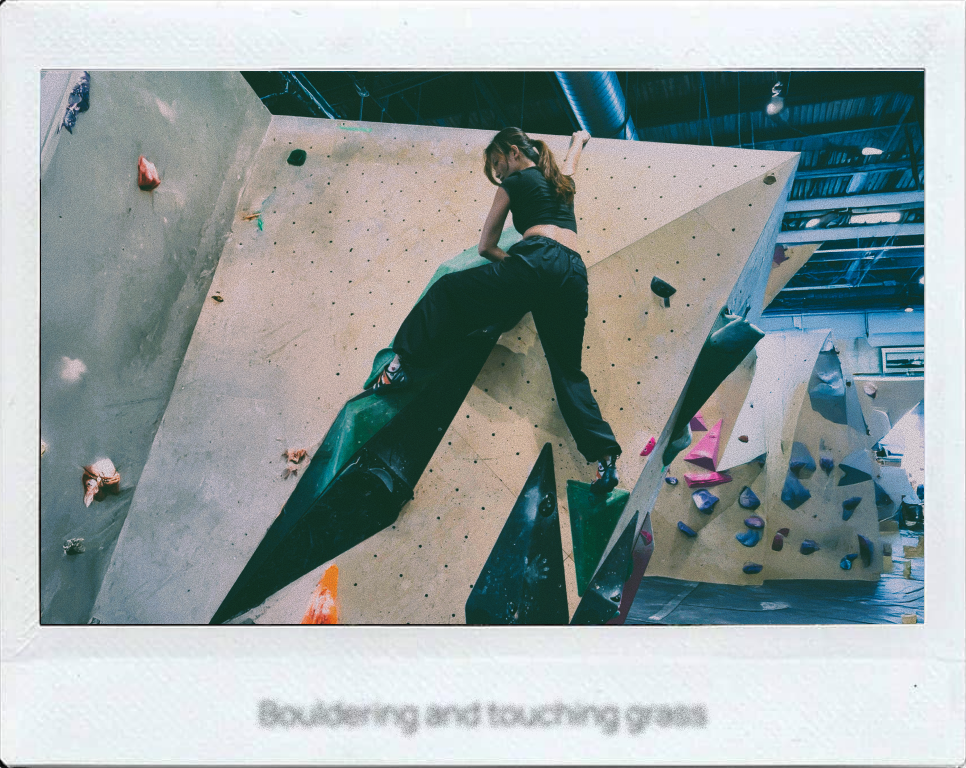
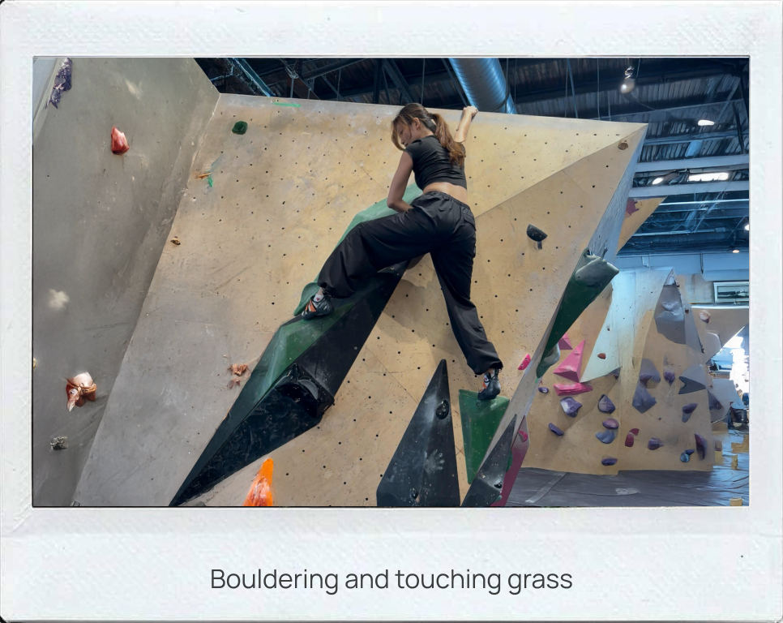
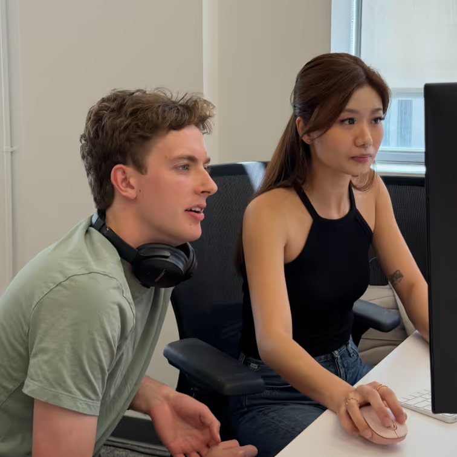
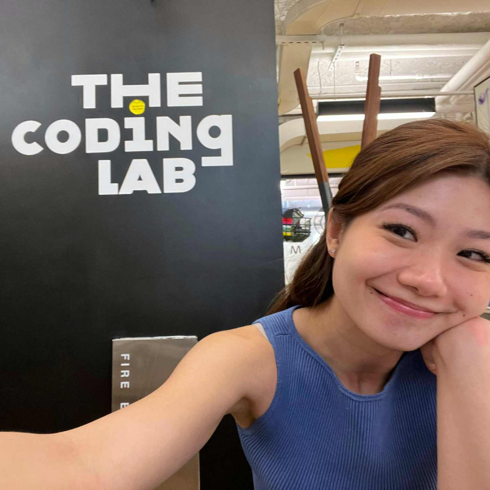

I'm Beverly Yip!
A UX design engineer who bridges the gap between what's technically possible and what people actually need. Whether through design or code, I turn technical possibilities into delightful human experiences.
I started as a software engineer at Salesforce, contributing to the Flow Builder and championing accessibility, before realizing I cared just as much (if not more) about how people interact with technology. That realization drew me to UX Design Engineering at Confido, where I got to design and code – bridging the gap between user needs and technical solutions.
Currently pursuing my Master's in HCI at NYU ITP, I'm exploring deeper into the intersection of technology and the human experience. I'm particularly focused on making the digital world more accessible and intuitive for everyone.
VIEW RESUME VIEW RESUME





Confido
During my internship, I redesigned a broken data validation system through user research, creating an intuitive design system with improved error visibility that accelerated finance team triage by 30%. I also led the redesign and development of scalable approval flows using React, TypeScript, and Ruby, delivering reusable components that reduced errors by 25% and improved audit visibility by 40%.

NYU
As part of NYU's Coding Lab mentor team, I guided students weekly through programming languages and tools like JavaScript, p5.js, REST APIs, and Git. I also taught creative coding as a Graduate Assistant for Code! classes, covering sound design, machine learning, and game development while assessing projects and providing student feedback.

UX Club @ NYU
As the external face of the club, I build strategic partnerships with industry leaders from companies like Google, Duolingo, and Nike, while managing branding across all platforms to grow our presence in the design community. I also drive internal operations by coordinating events, managing sponsor relationships, and connecting students with emerging UX opportunities.
Salesforce
I led Flow Builder UI/UX improvements for thousands of Salesforce users, working cross-functionally to translate research into optimized Lightning Web Component layouts. Additionally, I championed accessibility by implementing WCAG 2.1 standards and developed a secure MFA web portal using Angular.js, TypeScript, and Go while maintaining intuitive user experience.
NYU Tisch School of The Arts • 2024-2026
UC San Diego (Coursera) • 2024
Tertiary Infotech Singapore • 2024
Purdue Computer Science Department • 2018
Society of Asian Scientists and Engineers • 2017
Society of Asian Scientists and Engineers • 2017